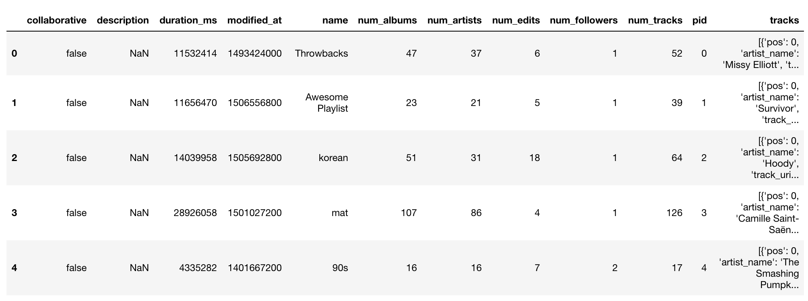
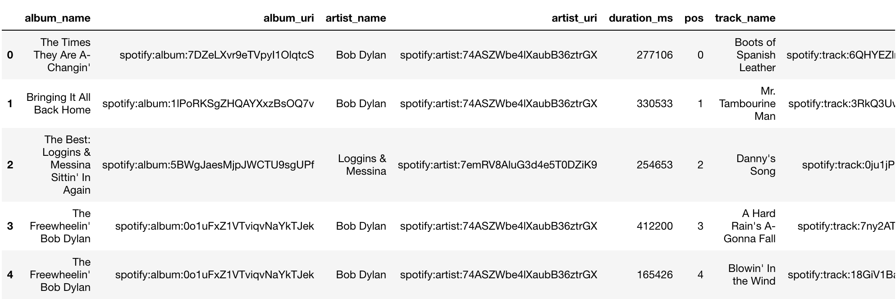
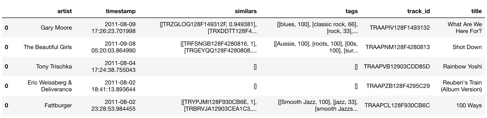
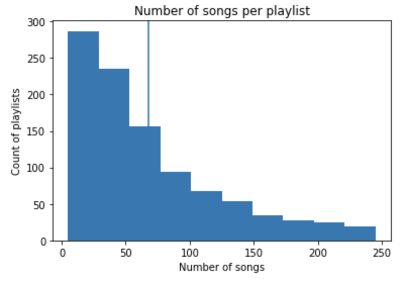
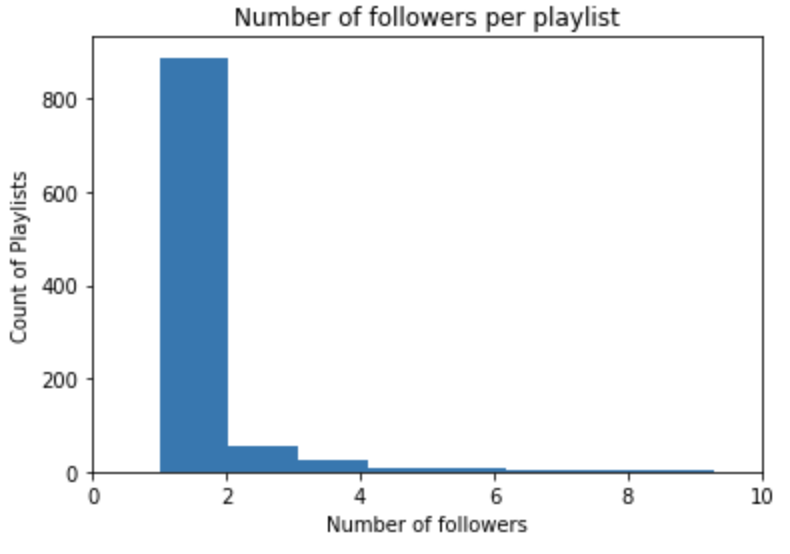
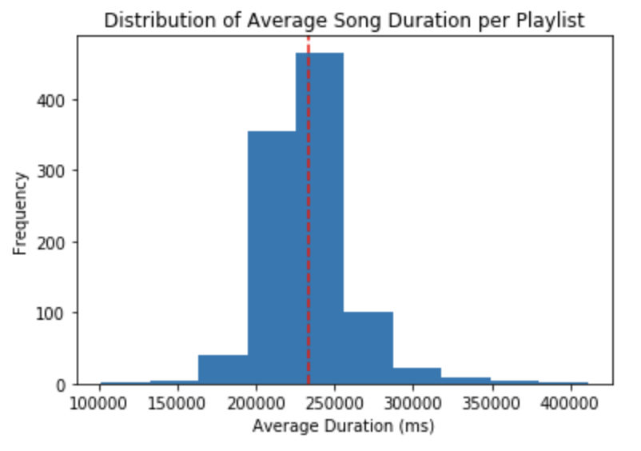
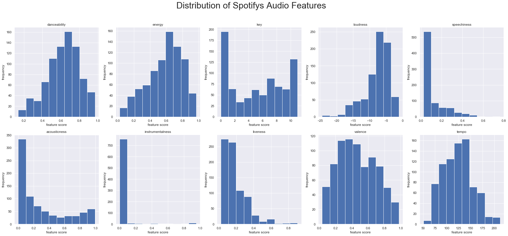
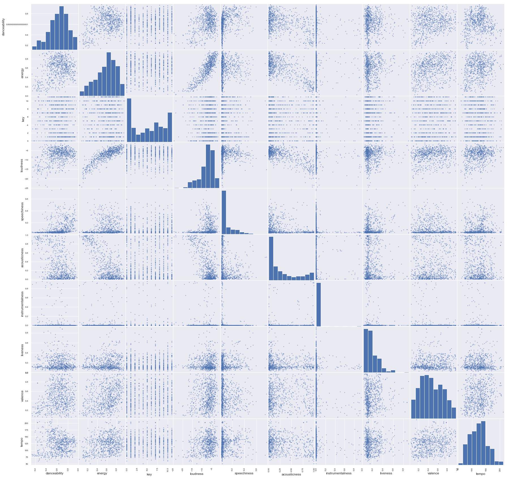

Description of Data
At the beginning of our project, we only looking at the Million Playlist Dataset and the Million Song Dataset. After our Exploratory Data Analysis, we narrowed down our resources two resources: The Million Playlist Dataset and the Spotify API.Here is a description of all three datasets/tools.
Million Playlist Dataset
The Million Playlist Dataset contains 1,000,000 playlists created by users on the Spotify platform. These playlists were created during the period of January 2010 through October 2017. Each playlist in the MPD contains a playlist title, the track list (including track metadata) editing information (last edit time, number of playlist edits) and other miscellaneous information about the playlist.Detailed Description
The Million Playlist Dataset consists of 1,000 slice files. These files have the naming convention of:- mpd.slice._STARTING_PLAYLIST_ID_-_ENDING_PLAYLIST_ID_.json

info Field
The info field is a dictionary that contains general information about the particular slice:playlists Field
This is an array that typically contains 1,000 playlists. Each playlist is a dictionary that contains the following fields:Million Song Dataset
The Million Songs Dataset was generated in 2010/2011. It provides songs and similar songs along with categorical tags.This is what a single json file looks like:
{"artist": "Adelitas Way", "timestamp": "2011-08-15 09:59:32.436152", "similars": [["TRZNRZF128F9318787" , 1], ["TRRJFIC128F931879D", 0.96639799999999998], ["TRLYTDK128F93187BB", 0.15887599999999999], ["TRQYGQT128F9318777", 0.15726699999999999], ["TRJYOJG128F93187B4", 0.15726699999999999], ["TROLOPS128F426E353", 0.11712], ["TRQNBAM128F9336E65", 0.10775899999999999],
...
["TRXLYAG12903CFCDFC", 0.0010740599999999999], ["TRRULQC12903CFCDF9", 0.0010740599999999999], ["TRVJSBM128F42B833D", 0.0010432499999999999], ["TRAOCLB128F92C2696", 0.00103914], ["TRISFXB128F932D354", 0.0010266699999999999]], "tags": [["alternative rock", "100"], ["rock", "60"], ["hard rock", "60"], ["heavy metal", "20"], ["00s", "20"], ["5", "20"], ["check this out", "20"], ["cryb test 4", "20"], ["adelitas way scream", "0"]], "track_id": "TRAAAAK128F9318786", "title": "Scream"}
Each json file is 1 song with the following characteristics:
Spotify API
After our Exploratory Data Analysis, realized that our data was not detailed enough at the song level. We wanted a model that could recommend songs based on song attributes. As a result, we decided to link our Million Playlist Dataset (using the Spotify URI for the track) and draw song attributes from the Spotify API. The song attributes are as follows:Learn more information of Spotify's API Audio Features.
Exploratory Data Analysis
In our EDA, we initially started with cleaning through the Million Playlist Dataset and the Million Song Dataset.Below we show the snippets of the 3 dataframes we began working with:
Exploring Million Playlist Dataset
The Million Playlist Dataset was used from a Spotify challenge. Here's a snippet of our playlist dataframe in our python notebook: This is a snippet of the dataframe for our million playlist dataset (the first slice, 1000 playlists). We can see from here, useful variables may be number of followers, number of songs, and possibly the number of artists. We will explore this further.
Here we have all the songs in the 1000 playlist set with an added column that links the song to the corresponding playlist. Now we have two dataframe that are linked through the "pid" and we hope to use information from both tables to make better recommendations. 
Exploring Million Song Dataset
Here is a snippet of the dataframe we created from the dataset: Preliminary Visualizations
Insights we have gained from the EDA and the following preliminary visualizations:



Additional Data Analysis
After our exploratory data analysis, we learned that we were going to have difficulty linking the Million Playlist Dataset with the Million Song dataset. For example, track labels from each dataset might not match up. In addition, we wanted more information on the song level (more than the Million Song dataset provided). As a result, we decided to move forward with using the Million Playlist Dataset and accessing the Spotify API. Since the Million Playlist Dataset included the track Spotify URI, we were able to access the song attributes quickly.We explored the Audio Features from the Spotify API and found these distributions:

We then scattered the variables against each other to see if we found any significant patterns:

Since we aren't regressing on the Audio Features, the collinearity between features doesn't matter. We indeed to use the features as a vector to find euclidean distance between other points.